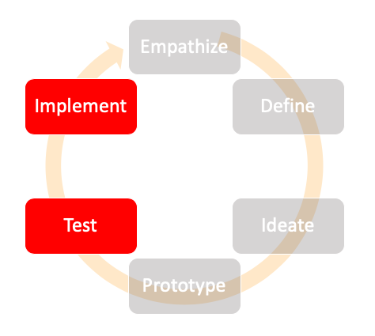

The Materialize stage is primarily for testing the prototype ideas, assessing if the solution meets the needs of the user, and materializing the ideas into a final product.The two phases that fall into this bucket are Test and Implement.
Test
This phase deals with testing if the prototype meets the user's needs and collecting user feedback if the solution works the best for them.
Implement
This phase is one of the major phases in Design Thinking. It comprises of culmination of all the ideas into a final usable product that meet's the user's needs.
